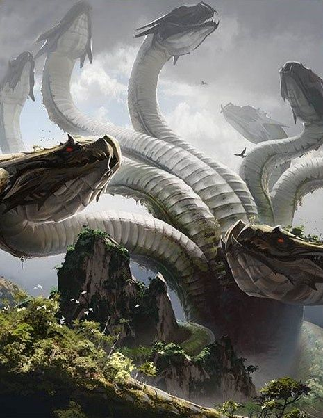

Set on the Isle of Khretul which is located on the world of Terria, the escape the Island game is a small mini-game of which is a part of the Chronicles of Isle Khretul. These chronicles are however, also a part of the Chronicles of Terria, of which are a set of stories set on the planet of Terria as part of the Galactic Chronicles set. You will take on the role of an outsider, of which is shipwreked on the island by a formidable Hydra. Finding yourself stranded on the Isle of Khretul, you must work your way across the island and find a way to escape it...before it claims your life...
